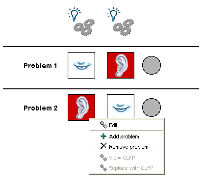

Pautas para la particularización, instanciación y
ejecución
Particularización del patrón en un Diseño de
Aprendizaje:
- En la paticularización, varias tareas deben ser
realizadas: determinar el número de problemas (es decir, de
fases), definición de los objetivos y los
prerrequisitos,
especificación de las actividades tanto del profesor como de los
alumnos (definición del tema de la lluvia de ideas, etc.),
creación de los recursos necesarios (contenidos y herramientas)
y configuración de la completitud de las actividades (por
ejemplo, control de tiempo).
- Una vez creado el Diseño de Aprendizaje, es posible
añadir nuevos problemas durante la particularización;
problemas existentes puyeden ser eliminados. Haz click con el
botón derecho el ratón sobre el gráfico para
acceder a estas funciones.Right clicking on the graph will show a menu
with these options:

Instanciación de un Diseño de Aprendizaje basado en
el CLFP TAPPS:
- En la instanciación, diversas tareas deben ser realizadas:
creación de grupos (parejas) y asignación de personas a
roles parejas.